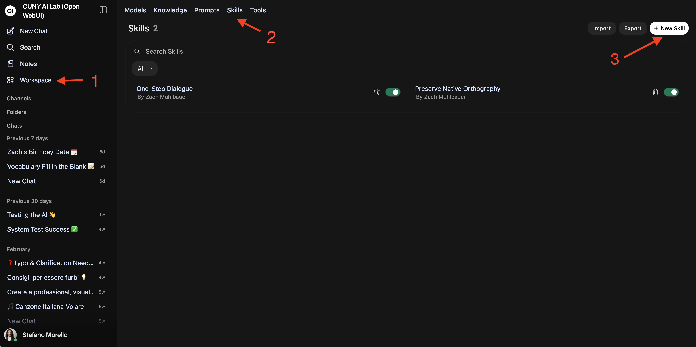
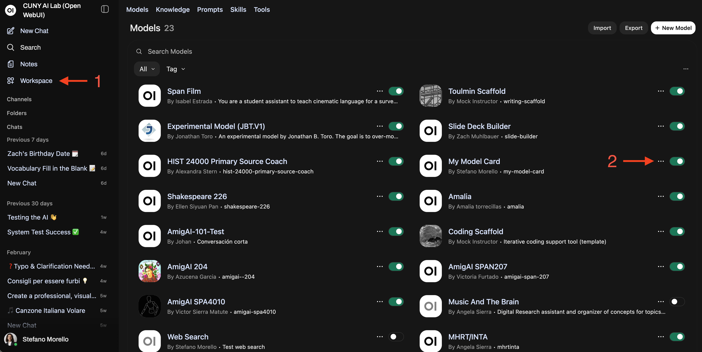
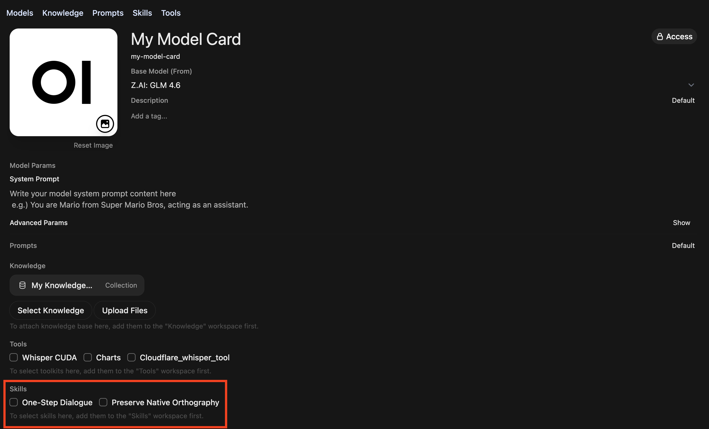

Grounded the model in course materials so it can reference real documents
March 30 (This Week)
Customizing Skills & Tools
Build specialized skills, tools, and workflows tailored to your courses
Quick Check
Pre-Flight
Verify your setup, then identify the move you’ll build today.
System Prompt — What role and constraints did you set? Have you revised or tested it?
Knowledge Collection — Is it attached? Does the model draw on it when you test?
Name One Pedagogical Move — Something you do as an instructor that follows a repeatable pattern (e.g., narrowing a research topic one question at a time, walking a student through a source, guiding them from description to interpretation). Skills enable the model to mimic those moves.
The Basics
What Is a Skill?
A skill is a structured procedure you write in markdown or plain text. It tells the model how to handle a task your system prompt can’t cover on its own.
Think of it as a recipe for a move you’d make as an instructor — establishing stasis, sourcing a document, reading a cinematic frame — written so the model executes it consistently.
Key distinction: The system prompt sets general behavior. A skill decomposes a specific task into steps the model won’t follow unprompted.
What you build
Week 1
System Prompt
behavior & constraints
+
Week 2
Knowledge
syllabus, rubric…
+
New
Skill
step-by-step recipe
student never sees above
👤 Student“Can you look at this paragraph from my draft?”
🤖
AI Model
Follows the skill’s procedure to respond
🤖 Response“Here’s what I notice in your passage…” (quotes the excerpt, responds below it)
What the student sees
Skills in Open WebUI
Activating Skills
A skill is worth making when the move has a repeatable structure (trigger, steps, output shape) that you want the model to follow every time.
1. Create the skill
Go to Workspace → Skills and click + New Skill. Write or paste your skill text.
2. Add it to your model
Open your model card in Workspace → Models. Scroll to the Skills section and toggle the skill on. It activates automatically in every chat with that model.
Alternative: Paste into System Prompt
You can append skill text directly to your system prompt, but this crowds the prompt and makes it harder to maintain.

Step 1: Workspace → Skills Open Workspace (1), click the Skills tab (2), then + New Skill (3) to create one.

Step 2: Workspace → Models Open your model card (1), then scroll to the Skills section (2).

Step 2: Toggle On Toggle the skill on at the bottom of your model card. It activates for every chat with this model.
Why Bother?
Why Skills Matter
A student types: “I want to write about social media and mental health.”
Without a Skill
“That’s a great topic! You could narrow it by focusing on a specific platform, age group, or type of mental health impact. Consider looking at recent studies on Instagram and anxiety, or TikTok and body image. You’ll also want a clear thesis statement.”
Lists options instead of asking questions. The student still has no method for choosing among them.
With a Stasis Theory Skill
“Your topic: social media and mental health.
Let’s start with the facts. What specific situation are you responding to — something you’ve read, noticed, or experienced? What has happened that makes this a question worth asking right now?”
Opens with one stasis question (conjecture), grounded in the student’s own words. The skill told the model how to narrow, not just to narrow.
The Problem
The Gap Skills Fill
Models can do many things, but not unless you spell it out. Certain moves need a step-by-step recipe to work consistently.
What models won’t do without a skill:
Walk through stasis theory one question at a time
Quote a passage from an uploaded source before asking a question
Ask one focused question instead of listing five
Build on what the student just said
Scaffold from description to analysis to interpretation
System Prompt Alone
“Help students develop research topics”
Model knows what to do, not how
System Prompt + Skill
“Ask one stasis question, build on the student’s last answer”
Model knows what and how
Tools in Open WebUI
What Is a Tool?
A tool is a function the model can call to do something it can’t do with language alone — search the web, query your uploaded files, run code, or generate an image.
Tools live in Workspace → Tools. You can enable them two ways:
Per Chat
Click + in the message bar to toggle individual tools on for that conversation.
Per Model
Attach tools permanently in Workspace → Models → Tools. Every conversation with that model will have access.
Caveat: Smaller models (e.g. Gemma 3 27B) call tools inconsistently. Use Kimi K2.5 or GLM 5 for reliable tool use.
The Difference
Skills vs. Tools
A skill is a document you write in plain text: a procedure the model follows. A tool is code: a function the model calls. Both extend what your custom model can do, but they work differently.
Skill
You write it. Plain text, no code. Tells the model how to handle a specific pedagogical move step by step.
Tool
Pre-built or imported. Code that runs behind the scenes. Gives the model abilities it doesn’t have on its own — like searching the web or running a calculation.
Today’s focus: Skills. Tools are ready to use out of the box. Skills are what you build.
Skill (plain text)
“Walk through stasis one question at a time”
You write it • Shapes how the model responds
vs.
Tool (code)
Search the web, query files, run code, generate images
Pre-built • Gives the model new capabilities
Built-in tools
Web Search
Current information
Knowledge Query
Search uploaded files
Code Execution
Run code in a sandbox
Image Generation
Create from descriptions
Example 1
Establishing Stasis
Composition — Stasis Theory
Composition & Writing
Before
Starting PointWhen a student is developing a research topic, walk them through four stages — conjecture, definition, quality, and policy — to help them narrow their question. Ask one stasis at a time.
Model walks through all four stages in a single response instead of pausing at each
No procedure for connecting the student’s working topic to each stasis question
Treats stasis as a checklist rather than a deliberative process
No mechanism to let the student reformulate before moving on
Skips the key move: helping the student see which stasis their argument lives in
Composition & Writing
After
StrongSkill: Establishing Stasis for a Research Topic
When a student is developing or narrowing a research topic, follow this procedure:
Procedure:
1. Ask the student to state their topic in one sentence. Do not evaluate or refine it yet.
2. Conjecture: “What has happened or is happening that makes this worth investigating?” Wait for their answer. Use what they say to sharpen the next question.
3. Definition: Point to a key term in their response. “How are you defining [term]? What kind of problem is this — legal, ethical, empirical, cultural?” Wait.
4. Quality: “What’s at stake, and for whom? What makes this serious enough to argue about in an 8-page paper?” If their scope is too broad, ask them to name one specific population or context. Wait.
5. Policy: “What should be done, and by whom?” Help the student see whether their argument is making a factual claim, a definitional claim, a value judgment, or a policy proposal.
6. Ask: “Which of these four questions does your argument most need to answer?” Guide them toward a thesis grounded in that stasis.
Format:
Your topic: [student’s stated topic]
[One stasis question, tied to a specific phrase the student used]
[1–2 sentences explaining why this question matters for their project]
Example 2
Sourcing a Document
History — The Sourcing Heuristic
History
Before
Starting PointWhen a student asks about a primary source, retrieve it from the knowledge collection and walk them through its rhetorical situation using SOAPS. Ask questions one element at a time rather than summarizing.
Model paraphrases the source instead of quoting from the uploaded document
No procedure for retrieving and presenting specific passages as evidence
Rushes through all SOAPS dimensions in a single response
Student receives a finished reading rather than a structured inquiry
No requirement to ground each analytical move in the source’s own language
History
After
StrongSkill: Sourcing a Primary Document
When a student asks about or encounters a primary source from the course, follow this procedure:
Procedure:
1. Retrieve the document from the knowledge collection. Quote a key passage — do not paraphrase or summarize.
2. Present the passage in a block quote with its metadata (title, date, author) drawn from the uploaded file.
3. Ask: “Who created this document, and what was their position or stake?” Wait for the student’s answer.
4. After they respond, point to a specific phrase in the quoted passage that supports, complicates, or challenges their answer.
5. Ask: “When and where was this written? What was happening at that moment that shaped what the author could say?” Wait.
6. Ask: “Who was the intended audience? How does knowing that change what the document means?” Wait.
7. After all three sourcing moves, ask: “Given what you now know about the author, the moment, and the audience — what can this source tell us, and what can’t it?”
Format:
> [quoted passage from uploaded source]
— [Author], [Title], [Date]
[One sourcing question]
[1–2 sentences connecting the question to a specific phrase in the passage]
Example 3
Reading the Frame
Literature — Cinematic Mise-en-Scène
Literature & Cultural Studies
Before
Starting PointWhen a student shares a film still or visual artifact, guide them from describing formal elements — composition, lighting, framing — toward interpreting how those choices construct meaning in context.
Model describes the image for the student instead of directing their attention
No scaffolding from observation to formal analysis to interpretive claim
Treats all visual elements at once rather than isolating one per turn
No mechanism to keep the student doing the looking and the arguing
Skips the gap between “what’s in the frame” and “what argument it makes”
Literature & Cultural Studies
After
StrongSkill: Reading Cinematic Images
When a student uploads a film still, photograph, or visual artifact — or asks about an image from the knowledge collection — follow this procedure:
Procedure:
1. If the student uploaded an image, use it directly. If they reference a visual from the course, retrieve it from the knowledge collection and present it. If the image is not in the collection, say so.
2. Ask: “What do you notice first?” Let the student describe before you respond.
3. After their description, direct attention to one formal element they haven’t mentioned — composition, lighting, color, framing, depth of field, or gaze. Ask what it does.
4. Ask how that formal choice shapes the viewer’s experience. Move from what is in the frame to how the image is constructed.
5. Introduce context: ask the student to connect the visual choices to the cultural moment, genre, or argument of the work. If relevant context exists in the knowledge collection, quote it.
6. Guide them toward an interpretive claim: “Based on what you’ve observed, what argument is this image making?”
Framework: Description → Analysis → Interpretation
• Description: What is literally in the frame?
• Analysis: How do formal elements (light, angle, placement) create meaning?
• Interpretation: What claim can the student make, grounded in visual evidence?
Building Blocks
Writing Your Own Skills
Structure
Anatomy of a Skill
Every skill has three parts.
Trigger — When should this skill activate?
Procedure — What steps does the model follow, in order?
Format — What should the output look like?
Component 1
Trigger
Define when this skill should activate. A clear trigger keeps the model from applying the wrong procedure to the wrong task.
What student action starts this workflow?
Does it activate when they share a draft? Ask about a source? Upload an image?
Should it run automatically, or only when the student asks?
Skill: [Skill Name]
When a student [specific action or input], follow this procedure:
Your turn: What pedagogical move are you trying to teach the model? Name the student action that should trigger it.
Component 2
Procedure
The core of every skill. Numbered steps that tell the model what to do, in what order, and when to wait.
What should happen first? What comes next?
Where should the model wait for the student before continuing?
Should it quote, cite, or reference specific materials?
Procedure:
1. [First step — what does the model do or ask?]
2. [After the student responds, what comes next?]
3. [Continue the sequence — include wait points]
4. [Final step — synthesis, next action, or handoff]
Your turn: Write 3–5 numbered steps. Think about the sequence you follow when you do this yourself as an instructor.
Component 3
Format
Specify what the output should look like. Without a format, the model structures responses however it wants.
Should the model quote the student’s text?
Should each response end with a question?
How long should a response be?
Format:
> [quoted excerpt from student work or source document]
[1-2 sentences: what you observe]
[One question for the student]
Your turn: Write a short format template. What should each response from the model actually look like?
Hands-On
Write Your First Skill
Pick one pedagogical move from your course and turn it into a step-by-step recipe.
Exercise
Choose Your Move
Which is closest to the skill you want to build?
Establishing Stasis
Narrow a research topic one question at a time
Sourcing a Document
Quote, then ask who, when, for whom
Reading the Frame
Describe → analyze → interpret
Something Else
Any repeatable pedagogical move
Draft It
Write Your Skill
Use the four-part structure to write a skill for the move you chose.
1. Trigger
What student action starts this?
2. Procedure
3–5 numbered steps with wait points.
3. Format
What does each response look like?
Skill: [Name]
When a student [trigger action], follow this procedure:
Procedure:
1. [First step]
2. [Second step — include wait points]
3. [Third step]
Format:
> [quoted text from student or source]
[Observation in 1-2 sentences]
[One question]
Integrate It
Add Your Skill
Connect the skill you wrote to the model you built in the previous workshops.
Paste into System Prompt — Workspace → Models. Add the skill at the end of your system prompt. Save.
Or upload as .txt — Save the skill as a .txt file. Upload to Workspace → Knowledge.
Test It
Open a new chat. Trigger the skill with realistic student input. Does it follow the procedure?
Iterate: If the model skips steps, add wait points. If it dumps everything, add “one per turn.”
System Prompt
Role, constraints, tone
+
Knowledge Collection
Syllabus, rubric, readings, sources
+
Your Skill
Step-by-step recipe for a specific move
✅
Your Complete AI Tool
Directive + sources + workflows
Workshop Complete
What You’ve Built
March 16
System Prompts ✓
Role, constraints, tone
March 23
Knowledge Collections ✓
Grounded in your materials
March 30 (Today)
Skills & Tools ✓
Step-by-step workflows
You now have a custom AI tool with three modular layers that can be tested as a configuration and refined iteratively. That way, you can see what each component contributes and where to focus before you introduce it in the classroom.